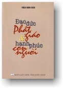

|
BuddhaSasana Home Page |
Vietnamese, with Unicode Times font |
|  |
Đạo đức Phật giáo và hạnh phúc con người Hòa
thượng Thích Minh Châu |
-ooOoo- Lời nói đầu "Đ ạo đức Phật giáo và hạnh phúc con người" là một tuyển tập gồm 29 bài nghiên cứu và thuyết giảng cho Tăng Ni Phật tử, được rút ra từ rất nhiều bài báo, bài thuyết pháp của Hòa thượng Thích Minh Châu trong vòng 10 năm qua, trong sự nghiệp 50 năm nghiên cứu Phật pháp, dịch thuật kinh điển, hoằng pháp, giáo dục và tham gia lãnh đạo Giáo hội Phật giáo Việt Nam của Hòa thượng.Đạo đức học trong triết học là môn học nhằm đánh giá hành động; từ đó nhận rõ con đường người ta phải theo để loại trừ những sai lầm, khổ đau, tiến đến hạnh phúc tối hậu. Trong ý nghĩa tổng quát và căn bản này, toàn bộ kinh sách Phật giáo dù vô cùng phong phú, chi li, khúc chiết vẫn được xem là thuộc pháp môn để thực hành, để tu tập, tiến đến giải thoát, hạnh phúc miên trường, cứu cánh Niết-bàn; và như thế, Phật học rốt lại chính là đạo đức học. Đó là ý nghĩa thực tiễn nhất của giáo lý Phật giáo vậy. Ở bài đầu mà tựa đề được chọn làm tựa đề của tập sách này, Hòa thượng đã viết: "Đạo đức Phật giáo là một nếp sống đem lại hạnh phúc cho con người, đề cao giá trị con người; một nếp sống trong sạch, thanh tịnh lành mạnh, loại bỏ các pháp bất thiện, thành tựu các thiện pháp; một nếp sống đi đôi với lạc, không đi đôi với khổ, giải thoát các triền phược, các dục trưởng dưỡng; một nếp sống trong ấy trí tuệ đóng vai trò then chốt, sống hài hòa với thiên nhiên, với con người; một nếp sống vô ngã vị tha". Rõ ràng đây là một minh hoạ về nếp sống đạo đức, về con người đạo đức Phật giáo đầy trí tuệ, thiện lành, tự tại và vô ngã trong môi trường xã hội và thiên nhiên hài hoà, an lạc. Các bài tiếp theo là 28 sự triển khai, giải thích, dẫn chứng bổ sung cho ý nghĩa trên của đạo đức học Phật giáo theo nhận định trên của Hòa thượng. Theo yêu cầu đông đảo chư Tăng Ni, Phật tử, chúng tôi tuyển chọn 29 bài cho nội dung tập sách này, trình Hòa thượng và được Hòa thượng đồng ý cho chúng tôi tiến hành thủ tục xin xuất bản và ấn hành. Mong sao như độc giả khả ý với những lợi lạc thực tiễn trong nội dung tập sách này. Phật lịch 2546 -ooOoo- Ðầu trang | Mục lục | Phần I | Phần II | Phần III | Phần IV | Phần V |
||||||||||||||
Chân thành cám ơn Tỳ kheo Minh Tịnh đã hỗ trợ công tác vi tính (Bình Anson, 04-2003).
[Trở
về trang Thư Mục]
last updated: 01-05-2003